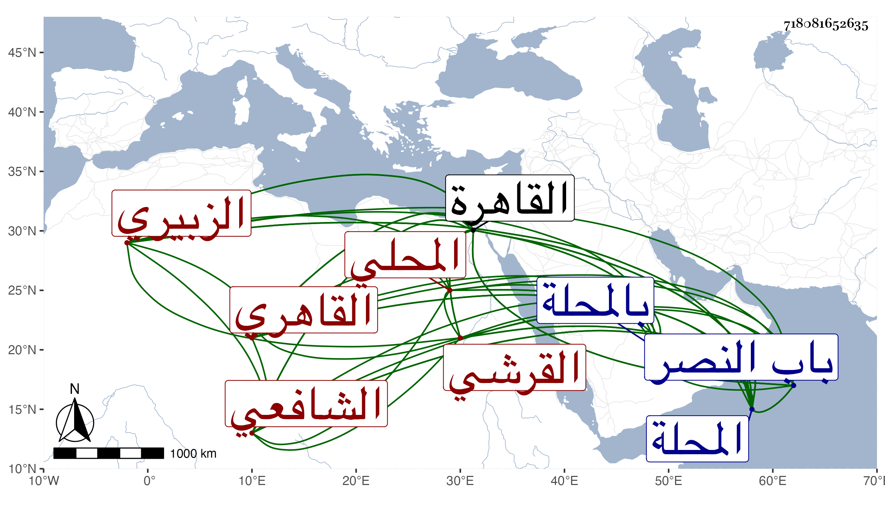

0902Sakhawi.DawLamic.ITO20230111-ara1.EIS1600.718081652635
Biography ID: 718081652635
362
عبد الرحمن بن محمد بن عبد الناصر بن هبة الله بن عبد الرحمن واختلف فيمن بعده التقي أبو محمد القرشي الزبيري المحلي ثم القاهري الشافعي والد الصدر محمد ويعرف والده وكان من أكابر أهل المحلة ترجمته في ذيل القراء بابن تاج الرياسة وهو بالزبيري نسبة إلى الزبيرية قرية من قرى المحلة كما كتبه السراج بن الملقن بخطه في عرض الجمال عبد الله بن التقي هذا وسمعه منه شيخنا لا إلى الزبير بن العوام مع إملاء ولده الصدر لهم نسبا إليه فالله أعلم . ولد في سنة أربع وثلاثين وسبعمائة تقريبا كما قاله شيخنا في معجمه وقال في إنبائه أنه قرأه بخط من يثق به ولكنه قال في القضاة سنة إحدى وأربعين بالمحلة ونشأ بها فحفظ القرآن والتنبيه وغيره ثم قدم القاهرة فاشتغل وتفقه بجماعة وقرأ القراءات على أبيه وسمع أبا الفرج بن عبد الهادي والميدومي وصاهر الموفق عبد الله الحنبلي على ابنته وتدرب في التوقيع حتى مهر في الشروط والسجلات وفاق في ذلك وجلس مع الموقعين مدة طويلة وسجل على القضاة بل ناب في القضاء دهرا في عدة من الضواحي عن العز بن جماعة وكذا عن البدر بن أبي البقا في القاهرة وغيرها ثم استقل به على حين غفلة في جمادى الأولى سنة تسع وتسعين وسبعمائة حين غضب السلطان على الصدر المناوي وحضر الصالحية على العادة ثم صار يلازم الجلوس في قاعة الحكم منها كل يوم ويخرج لبيته المجاور للصالحية من باب سرها فأقام سنتين وشهرا وأياما ، وحسنت مباشرته لعفته وتمام معرفته وكثرة تأنيه وتواضعه بحيث لم يذمه أحد ثم صرف في منتصف رجب سنة إحدى وثمانمائة وتعطل لاخراج ما كان معه من الجهات التي لا تليق بولايته وتعذر مباشرته بعد صرفه للنيابة فضلا عن التوقيع وقلة وظائفه بحيث لا تتحصل له كفايته منها ، ودام خموله إلى أن سمح له الجلال البلقيني بتقريره في الصالحية والناصرية فارتفق بهما يسيرا وكان يمشي من بيته فيدخل الصالحية لالقاء الدرس ثم يخرج من باب سرها إلى الناصرية لالقاء الدرس بها أيضا ثم يرجع ورام الناصر فرج غير مرة أن يعيده للقضاء لما طرق سمعه من الثناء عليه وشكر مباشرته والجلال يجتهد في إبطال ذلك ، وقد كتب في أيام عطلته كثيرا من كتب العلم كالروضة والمهمات ركائه لضيق حاله عن شراء الورق كان يكتب في أوراق التقاليد والمراسيم وما أشبهها مع كون خطه تعليقا ، بل صنف شرحا على التنبيه كتب منه قطعة وعمل تاريخا ينقل منه شيخنا في الحوادث والتراجم وقد حدث باليسير حمل عنه شيخنا وغيره كالتقي الشمني المسلسل والجزء الأخير من ثمانيات النجيب وغير ذلك . ومات وقد هرم في مستهل رمضان سنة ثلاث عشرة عن ثمانين سنة ودفن بتربة الصوفية خارج باب النصر . وذكره المقريزي في عقوده وأبوه مذكور في المائة قبلها ممن قرأ على أبيه فالتقي من بيت علم رحمه الله وإيانا .
